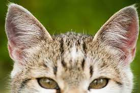
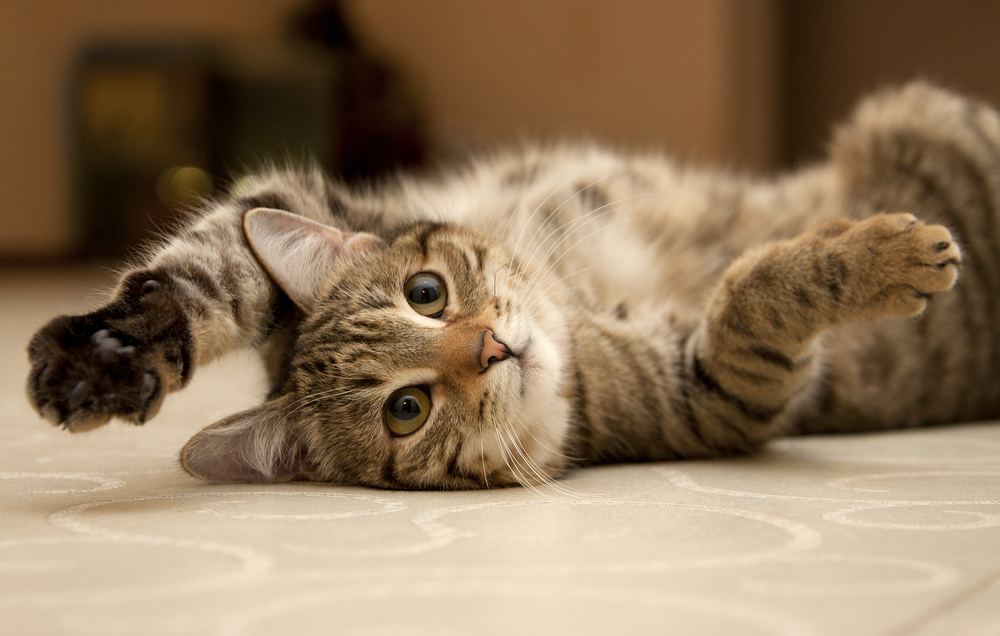
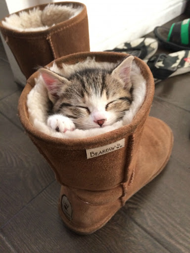

Fülmozgás

Mikor egymásra néznek rá vagy éppen a gazdájukra akkor furcsa fül mozgásokat lehet látni.
Ennek egyetlen szerepe van: A macskák közötti kommunikáció, nem, nem nyávogással kommunikálnak, azonban vannak kivételek.
A nyávogás szerepe az annyit tesz ki hogy az embereknek próbálnak vele mondani valamit.
Azonban, aki már rendelkezik cicákkal annak ez valószínűleg már nem újdonság.
Minden fül iránynak megvan a maga jelentése.
Miért lapul?

A cicáknak általában jókedvük van és dörgölőznek mindenhez. Vannak kivételek mikor éppen az ellenkezője történik és elutasítják azt hogy meglehessen őket simogatni.
Ilyenkor még mielőtt megtudnánk simogatni, inkább lelapul azért hogy ne tudjunk hozzájuk érni. A cica gazdik már biztosan tapasztalhatták ezt a jelenséget is
Mikor ez megtörténik, az annyit jelent hogy a cica nem akarja azt hogy megsimogassad és inkább hagyd békén.
Van mikor a cicánk sem lehet teli örömmel, vagy éppen végzett a mosakodással és nem akarja hogy összepiszkoljuk.
A macska megharap simogatás közben.
A cicák nem tudják kifejezni az érzelmeiket..Nem tudnak beszélni, meg aztán kommunikálni az emberrel nyávogással pedig végképp nem. Kétféle macskaharapás van:
Aggreszív, és szeretettel teli. Furcsán hangzik, azonban a macskák akkor is megharaphatnak ha csak a szeretetüket akarják kifejezni.
Ezek a harapások rendkívűl gyengék és érezni is alig lehet, ha azt veszed észre hogy megharap téged simogatás közben, de az fájdalommentes akkor nem kell aggódni
Mivel: Azzal csak azt fejezi ki hogy szeret.
Adok neki ételt, de otthagyja!

Macskák..macskák..a legfurcsább dolgokra is képesek, és ez is idetartozik.
Ugyanis, addig nyávog ameddig nem adsz neki valami finomat de aztán otthagyja.
Valójában a cicád nem éhes, egyszerűen csak "tesztelni" szeretne téged hogy mennyire törődsz vele
Ha adtál neki ételt akkor hozzád dörgölőzik és azzal meghálálja.
Emlékeztek, hogy a macskák a levadászott egeret is elénk rakják néha?
Ez majdnem ugyanazz!
Annyi különbséggel, hogy most te tőled vár el valamit, és ha nem kapja meg akkor morcos lesz.
Aztán pedig ha adtál neki ételt, visszanéznek rád becsukott szemekkel, ami röviden mosolygást jelent.
Milyen idős lehet a macskám emberi években?
macska életkor → emberi.
- 1 hónap → 6 hónapot jelent
- 3 hónap → 5 évet jelent
- 2 év → 24 évet jelent
- 3 év → 28 évet jelent
- 4 év → 32 évet jelent
- 5 év → 36 évet jelent
- 6 év → 40 évet jelent
- 7 év → 44 évet jelent
- 8 év → 48 évet jelent
- 9 év → 52 évet jelent
- 10 év → 56 évet jelent
- ...12 év → 64 évet jelent.
A cicák átlagéletkora az 12 év, ami emberi években 64-nek felel meg. Használjátok ki azt a 12 évet!